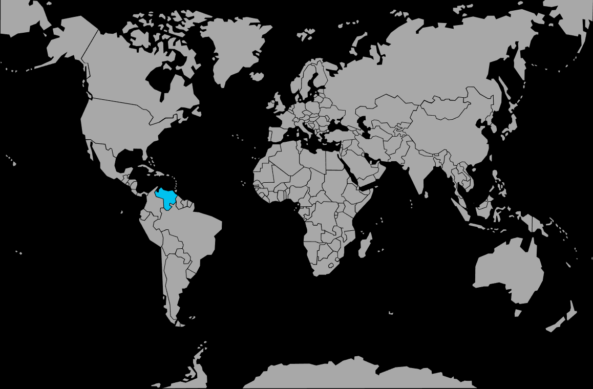

Systématique
- Ordre : Cyprinodontiformes
- Famille : Poeciliidae
- Genre : Poecilia
- Espèce : Poecilia wingei
Poecilia wingei est un petit vivipare coloré d’Amérique du Sud, proche parent du guppy classique mais présentant des motifs et colorations distincts.
Les mâles mesurent 2 à 3 cm, très colorés, alors que les femelles atteignent 3 à 4 cm et restent plutôt gris‑beige, plus discrètes visuellement.
L’espèce est vive et grégaire, occupant principalement les zones médianes et superficielles du bac, où les mâles paradent régulièrement devant les femelles.
Un maintien en harem, avec plus de femelles que de mâles, limite le harcèlement et permet d’observer un comportement naturel et actif.
Mode : ovovivipare ; la fécondation est interne et la femelle met au monde des alevins entièrement formés, en petites portées mais de manière régulière.
Les jeunes sont rapidement autonomes mais peuvent être partiellement prédatés, d’où l’intérêt d’un bac bien planté avec mousses et plantes fines.
Dimorphisme sexuel : mâle plus petit, très coloré, doté d’un gonopodium ; femelle plus grande, ventre plus rond, coloration sobre.
Espérance de vie : en moyenne 2 à 3 ans en aquarium, un peu plus avec une eau stable, propre et bien oxygénée.
Dans la nature, l’espèce fréquente de petits plans d’eau, mares, fossés et lagunes peu profondes du Venezuela, souvent riches en végétation aquatique et parfois légèrement saumâtres.
Répartition
Origine naturelle :
- Nord de l’Amérique du Sud, principalement au Venezuela.
- Petites eaux calmes, peu profondes, proches des berges et des zones végétalisées.
L’espèce fréquente les bordures riches en plantes, racines et feuilles mortes, qui offrent de nombreuses cachettes aux alevins.
Paramètres de maintenance
Température : 22 à 28 °C (tolère ponctuellement de 18 à 30 °C).
pH : 6,5 à 8,0.
GH : 3 à 20 °dGH, avec une préférence pour une eau au moins moyennement minéralisée.
Courant : faible à modéré, avec une filtration douce.
Volume conseillé : à partir de 40–50 L pour un groupe en harem (1 mâle pour 2–3 femelles), 20 L minimum pour un petit trio spécifique.
Régime alimentaire
Régime : omnivore avec une bonne part de micro‑proies ; accepte flocons, granulés fins, nourriture vivante ou congelée (artémias, daphnies) et apports végétaux (spiruline, légumes pochés).
Une alimentation variée, distribuée en petites quantités plusieurs fois par jour, favorise des couleurs vives, une bonne santé générale et une reproduction régulière.